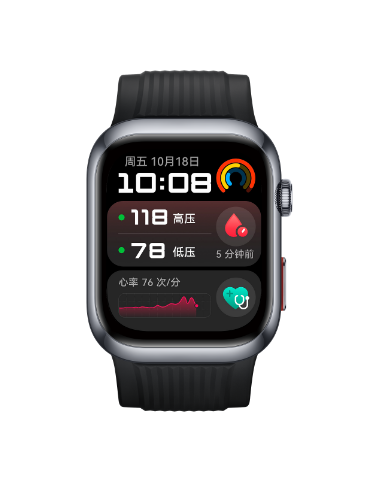
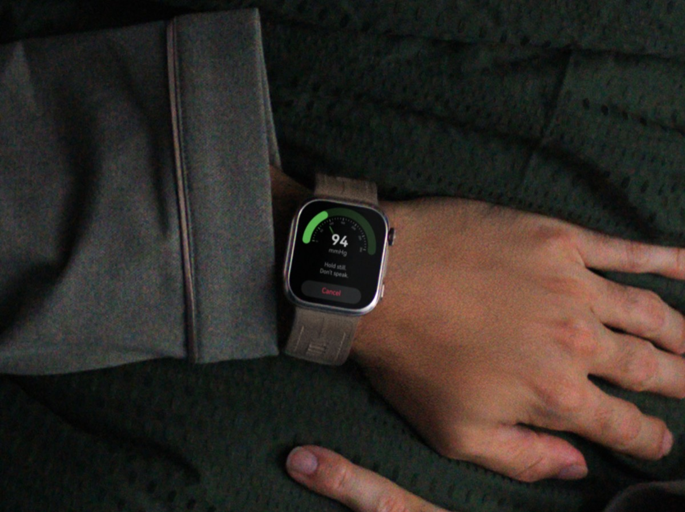

Второй продукт линейки. Общий браслет закрывает четыре группы хроников, но у самой крупной из них — 1,78 млн человек на диспансерном учёте — главный показатель он не измеряет. Здесь собрано всё, что с этим можно сделать: своя микроманжета, корпоративный трек Huawei и шесть компаний мира, которые умеют мерить давление на запястье. Кому пишем, что просим и чего ждать.
| Кому | Адрес | Отправлено | Что дальше |
|---|---|---|---|
| Sky Labs | info@skylabs.io + пресс-служба | 06.09, 14:37 | напоминание 20.09 |
| Hilo | info@aktiia.com | 05.09, 15:30 | напоминание 26.09 |
| Valencell | info@valencell.com | 06.09, 14:37 | напоминание 20.09 |
| Biobeat | info@bio-beat.com | 06.09, 14:37 | напоминание 20.09 |
| LiveMetric | info@livemetric.com | 06.09, 14:37 | напоминание 20.09 |
| Huawei Kazakhstan | aiman.sakhova@huawei.com | ⏸ черновик | заход через личный контакт владельца |
| Vital Signals | — | не пишем | ждём публикации исследования, осень 2026 |
Артериальная гипертония — самая массовая целевая группа: 1,78 млн человек на диспансерном учёте. Целевой показатель программы управления заболеванием — удержание давления ниже 140/90. Именно этот показатель общий браслет и не закрывает, поэтому гипертония выделена в отдельный продукт линейки.
Мы приняли это сознательно: оптическая оценка давления без манжеты не подтверждена наукой, и требование DB-411 отключает её в серийной прошивке. Европейское и американское кардиологические общества не рекомендуют такие данные для клинических решений, а FDA вынесло предупреждение Whoop ровно за эту функцию. Решение оказалось верным и со временем стало обоснованнее.
Но задача осталась: для гипертоника ценность браслета — скрининг фибрилляции предсердий, поведенческий контур и приверженность, а цифру давления даёт манжетный тонометр. Эта страница — о том, можно ли закрыть разрыв чужими руками: через партнёрство с теми, кто цифру давать умеет.
Полный разбор — в исследовании по безманжетному давлению (32 источника). Здесь — суть в трёх абзацах.
Насос физически пережимает артерию — это миниатюрный тонометр, а не алгоритм. Единственная технология, где цифра настоящая. Так устроены Huawei Watch D2 и D3.
Допущено FDA у Hilo, но калибровочная манжета входит в комплект и нужна регулярно. То есть допущен не «браслет вместо тонометра», а «браслет плюс тонометр».
Заявляют Vital Signals и Valencell. Ни одной опубликованной рецензируемой валидации, ни одного допуска. Академическая позиция: термин «без калибровки» следует понимать операционально, а не буквально.
Huawei — единственный производитель, который довёл измерение давления на запястье до медицинской сертификации. Но интересен не его магазин, а его корпоративный контур: там есть ровно то, что нам нужно.


Три контура Huawei — и их постоянно путают. Потребительский (Huawei Health и Health Kit, около 170 стран, включая Казахстан). Корпоративный 擎云 Qingyun (устройства H9D20 и H3550, только материковый Китай). Исследовательский (платформа Terve Research в Европе, прямые проекты с клиниками). В китайских кейсах впечатляет второй, а доступен нам первый — самый ограниченный.
| Что нужно нам | Health Kit доступен в РК | Корпоративный контур только КНР |
|---|---|---|
| ЧСС, SpO2, сон, стресс | есть | есть |
| RR-интервалы, вариабельность ритма | нет | есть |
| Артериальное давление и отчёт суточного мониторинга | нет | есть |
| Статус ношения (наш DB-403) | нет | есть |
| Апноэ сна, аритмия по пульсовой волне | нет | есть |
| Кастомизация под бренд Damumed | нет | логотип, циферблаты, коробка, ремешок |
| Регистрация медизделия | нет в РК | 4 удостоверения NMPA |
Почему разговор всё равно имеет смысл. Huawei работает в Казахстане с 1998 года, меморандум с Министерством здравоохранения подписан ещё в 2019 году, с Министерством цифрового развития — 29 июля 2025-го. Есть локальное юрлицо и раздел «Здравоохранение» на корпоративном сайте. В Китае модель называется «платформа плюс экосистема»: Huawei даёт устройство и открытые данные, партнёр пишет приложение под конкретную нозологию — ровно та роль, на которую претендует Damumed. Вне Китая так уже работают Dubai Health, катарский QCRI и испанская HM Hospitals.
Чего в этом направлении нет: дистрибуция потребительских устройств Huawei снята — закуп Band 10 в РК (16 369 ₸ от 100 шт) выше нашей розничной цены 14 990 ₸ и вчетверо выше себестоимости. Watch D2 и D3 остаются справочно: как ориентир цены и как ответ главврачу на вопрос, почему наш браслет не меряет давление.
Все, кто в мире делает носимое измерение давления. Проработка показала, что практический лидер для нас — не тот, кто впереди по деньгам и допускам.
В январе 2026 получен CE-MDR. В феврале подписана эксклюзивная дистрибуция в Японии с Otsuka Pharmaceutical. 31 августа объявлено соглашение с немецкой IEM GmbH: кольцо интегрируется с их системой суточного мониторирования, старт — Великобритания; первые отгрузки дали 2,6 млрд вон ($1,9 млн) выручки за полугодие. В ноябре 2025 Omron Healthcare, держатель около половины мирового рынка тонометров, инвестировал 3,5 млрд вон. В Корее прибор принят во всех топ-5 больницах и в 38 из 47 третичных больниц, 150 тысяч назначений за первый год. Компания готовит IPO с выходом в прибыль к 2028 году.
Риски: компания на пороге IPO и занята Японией, Европой и США. Цена потребительской версии $392 для массовой поликлиники запретительна — разговор имеет смысл про медицинскую версию с возмещением. Кольцо требует подбора размера.
✅ Письмо отправлено владельцем 5 сентября 2026 года в 15:30 по Астане на info@aktiia.com, тема «CALFREE licensing enquiry». Проверено по Gmail 6 сентября: одно исходящее в треде, черновиков не осталось, ответа пока нет. Если не будет к 26 сентября — короткое напоминание в тот же тред.
Что помнить: облачный расчёт конфликтует с требованием хранить данные в Казахстане; допуск FDA узкий — 22–59 лет и разовые замеры; за два года после CE-марки на технологию CALFREE ни одного публично названного партнёра. Самый ценный ответ — по требованиям к оптическому тракту: он полезен независимо от исхода, поскольку задаёт критерий качества PPG-модуля для выбора завода.
🔴 Чего не хватает: заявленный на конец 2023 года допуск FDA не получен до сих пор, на сайте формулировка осталась в будущем времени. Три года просрочки — сигнал, что технология не проходит планку регулятора. Ожидания невысокие: мы получим технологию без допуска. Ценность запроса в требованиях к оптическому тракту от компании, чьи датчики стоят у Samsung и Huawei.
30 декабря 2025 закрыт Series B на $50 млн (Ally Bridge Group, OrbiMed, Elevage Medical). 13 января 2026 Kestra Medical Technologies заключила эксклюзивную лицензию с инвестицией $5 млн. Идут пилоты с RWJBarnabas Health и партнёрство с Inbound Health в формате «госпиталь на дому».
Почему не первый приоритет: его среда — стационар, послеоперационная палата, госпиталь на дому. Наш сценарий — амбулаторное наблюдение хроников поликлиникой, где одноразовый пластырь экономически не работает. Плюс компания только что подняла $50 млн под США.
Технология отличается от всех: не оптика и не манжета, а прямая тонометрия — массив нанодатчиков давления на лучевой артерии, сопоставление с артериальной линией, без калибровки. Допуск FDA 510(k) от 4 мая 2022 года, срок рассмотрения 719 дней — необычно долго, что указывает на сложную оценку эквивалентности. Клиническое исследование — 40 пациентов в трёх центрах.
⚠️ Расхождение в финансировании: LinkedIn указывает $24 млн, CBInsights — всего $50 тыс. за три раунда, и все три акселераторные. Обе цифры до сверки считать неподтверждёнными. Переговорная позиция у нас сильная, но 🔴 главный риск — выживаемость компании: строить регуляторную стратегию на поставщике из десяти человек нельзя.
Допуска FDA нет — компания сама называет продукт investigational. Валидация не опубликована: заявлено исследование на 451 участнике со средней ошибкой −0,3 мм рт. ст., но это данные компании из заказанного ею исследования, протокол и подгрупповой анализ не раскрыты. Расчёт обязательно идёт в облаке. В демонстрации Bloomberg часть замеров оказалась неточной.
Всё, что разобрано выше, сведено в одну матрицу по единым критериям. Это главный раздел страницы: по нему принимается решение.
Правильный критерий сейчас — не «сколько заработаем», а «сколько стоит выяснить». Ни один вариант не готов к решению, зато три из них проверяются бесплатно.
| Приоритет | Действие | Стоимость проверки | Что даёт даже при отказе |
|---|---|---|---|
| 1 | Письмо в Sky Labs | 0 ₸ | понимание, как они устроены на новых рынках; их модель возмещения — образец для нашего варианта А |
| 2 | SKU C в RFQ заводам | 0 ₸ | настоящая цена второго продукта вместо оценки; вопрос про ISO 81060-2 и NMPA сразу отделит серьёзных поставщиков |
| 3 | Запрос в Huawei Kazakhstan | 0 ₸ | ответ про уровень данных на Watch D2 закрывает направление в любую сторону |
| 4 | Письмо в Valencell | 0 ₸ | требования к оптическому тракту от поставщика датчиков Samsung и Huawei — ориентир для выбора завода |
| 5 | Напоминание в Hilo 26.09 | 0 ₸ | то же по оптике; плюс ясность по CALFREE |
| 6 | Biobeat и LiveMetric | 0 ₸ | ✅ отправлены 06.09 вместе с остальными |
Если Sky Labs согласится на дистрибуцию — у нас появляется зарегистрированный прибор с цифрой давления и путь через возмещение, который они уже прошли в Корее. Это самый сильный из возможных исходов, но цена $392 ограничивает его платёжеспособной группой и потребует отдельной ценовой модели.
Если Huawei откроет данные на Watch D2 — появляется техническая возможность, но остаётся регуляторная: у устройства нет статуса медизделия в Казахстане, и получать его пришлось бы Huawei, а не нам. То есть даже успех здесь не снимает вопрос зачёта наблюдения по приказу.
Если завод даст приемлемую цену на SKU C — это единственный путь, где мы остаёмся владельцами продукта и держателями удостоверения. Медленный и дорогой, но свой. Именно поэтому запрос в RFQ стоит отправить независимо от всего остального.
Если все откажут — ничего не ломается. Наша клиническая модель изначально построена так, что давление в ней не несущая конструкция: для гипертоника ценность браслета в скрининге фибрилляции предсердий, поведенческом контуре и приверженности. Мы возвращаемся к базовому пути и ждём, во что выльются исключения FDA по оптическому измерению давления в 2027 году.
1. Побеждает не технология, а способ входа в систему здравоохранения. Sky Labs с кольцом на оптическом датчике обошёл технологически более сильных конкурентов, потому что зашёл через возмещение и назначение врача. Это подтверждает нашу ставку в варианте А.
2. Международная экспансия здесь идёт только через локального партнёра. Sky Labs: Otsuka в Японии, IEM в Европе, Omron в рознице. Biobeat: Kestra, Inbound Health, RWJBarnabas. Huawei вне Китая: Dubai Health, QCRI, HM Hospitals. Никто не выходит на новый рынок сам. Это наш главный аргумент в любых переговорах: мы — именно такой партнёр для Казахстана.
3. Независимая валидация продолжает бить по лидерам. После ретракции работы по Aktiia появился второй случай — PLOS One по Biobeat с существенной потерей данных. Чужим маркетинговым цифрам не верить.
4. Разрыв между допуском и клиническим признанием никуда не делся. Из шести компаний допуски FDA есть у трёх, но ни одна не переубедила европейское и американское кардиологические общества. Ссылаться на чужие допуски как на доказательство точности нельзя.
5. Ни один вариант не решает задачу первой партии. Вариант А остаётся рекомендацией, а эти переговоры — способ добыть недостающее: цифру давления вторым продуктом линейки и требования к оптическому тракту для запроса заводам.
| Когда | Действие |
|---|---|
| ✅ 06.09.2026 | отправлены письма в Sky Labs, Valencell, Biobeat и LiveMetric |
| ⏸ у владельца | запрос в Huawei Technologies Kazakhstan — заход через личный контакт, черновик готов |
| 26.09.2026 | если нет ответа от Hilo — напоминание в тот же тред |
| 20.09.2026 | если нет ответов от Sky Labs и остальных — напоминания в те же треды |
| осень 2026 | проверить публикацию исследования Vital Signals |
| январь 2027 | проверить, во что вылились исключения FDA по оптическому измерению АД |
docs/pisma-shest-kompaniy.md и docs/pismo-huawei-kz.md.